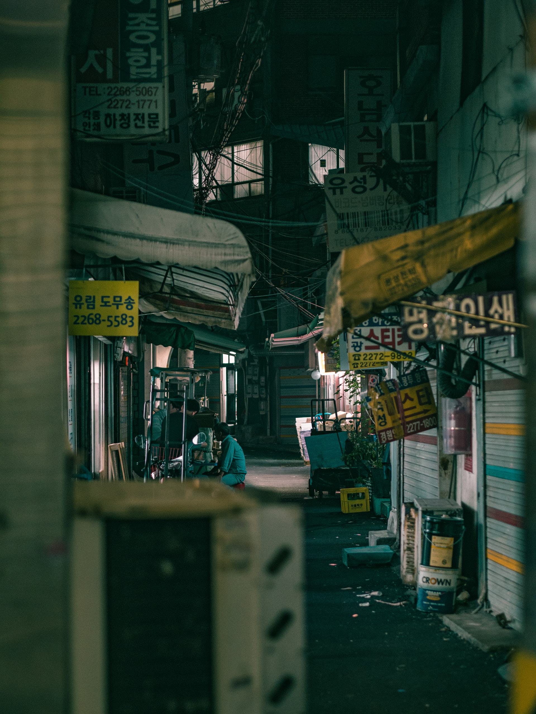

HOME

개천 건너 주택가 골목에서는 고기 굽는 냄새가 났다. 나는 그것이 고기 굽는 냄새인 줄 알면서도 어머니에게 묻고는 했다. "고기 굽는 냄새란다. 우리도 나중에 해 먹자." "나중에 언제?" "수백 번도 더 들었어. 그렇지만 이젠 속지 않아." 영희는 부엌문 앞에 서서 말했다. "엄마, 큰오빠가 몰래 또 고기 냄새 맡으로 갔었대." 어머니는 아무 말이 없었다.